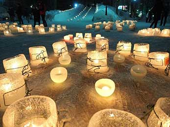

中島公園

札幌駅から地下鉄南北線で３駅、とアクセス抜群の「中島公園」。
市内随一の歓楽街すすきのに隣接しながらも、平和でのどかな空気が流れています。
鴨々川、菖蒲池といった水辺、樹齢数百年にもなる木々といった四季折々の穏やかな変化を遂げる自然の公園であると同時に、音楽ホール・天文台・文学館などの文化施設も充実。重要文化財の「八窓庵」や「豊平館」を擁し、歴史の流れを感じられる風情も大きな魅力です。「日本の都市公園100選」や「日本の歴史公園100選」にも選ばれ、札幌のみならず北海道を代表する公園の1つとなっています。
ゆきあかりin中島公園
- 冬の札幌にゆらゆら煌めく優しい灯
2020年に第14回を迎えた「ゆきあかりin中島公園」。
自然豊かな憩いの場として市民に愛されている「中島公園」で、雪まつり期間中に開催される人気のイベントです。
雪化粧をした園内は、柔らかなキャンドルのあかりに包まれ、幻想的な世界を楽しめます。来場者が紙コップに願い事を書いて、オリジナルのランタンを作れるコーナー（参加無料）もあります。
2021年は、新型コロナウイルスの感染拡大防止対策として会場展開を見送ることとなりました。オンライン開催となった今年は例年開催の模様を振り返ります。
来る2022年、みなさまとお会いできることを楽しみにしています。
幻想的な灯りがやさしく彩る

-
第14回開催／令和2年
地元住民による手作りの滑り台
-
第13回開催／平成31年
ペットボトルキャンドル
- 
-
第12回開催／平成30年
無数のランタンがどこまでも続く

-
第11回開催／平成29年
9条広場 光のピラミッド

-
第10回開催／平成28年
ぬくもりのあるスノーキャンドル

-
第9回開催／平成27年
ハート型のアイスキャンドル
会場へのアクセス
| 住所 |
|---|
| 〒064-0931 札幌市中央区中島公園1 |
| 交通機関 |
|
地下鉄南北線『中島公園駅』 地下鉄南北線『幌平橋駅』 市電『中島公園通』『行啓通』 |
| TEL／FAX |
| (011)511-3924／(011)511-0437 |